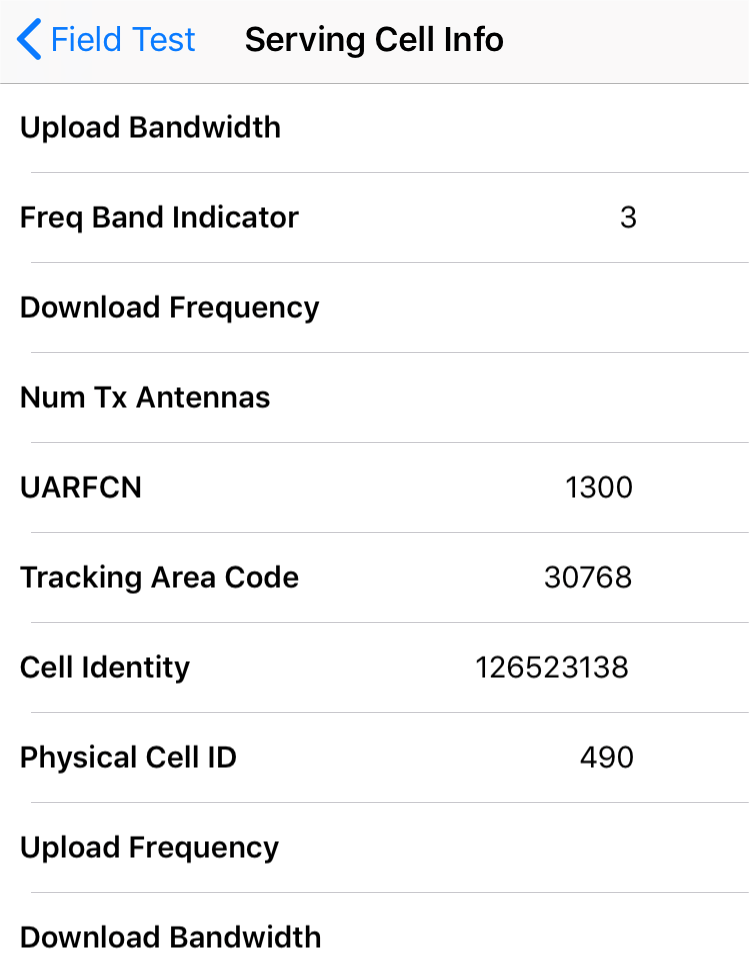
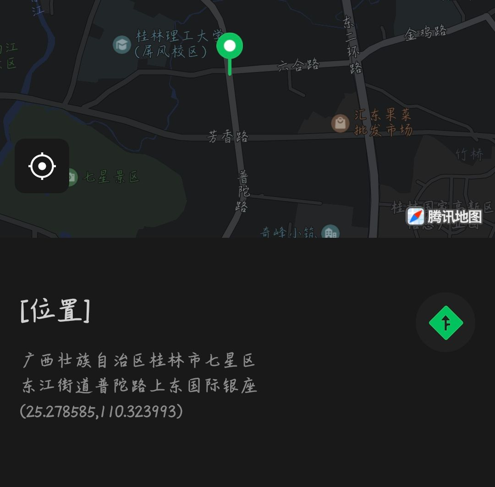

实验课一
网络渗透测试实验报告
一 实验目的和要求
理解网络扫描、网络侦察的作用；通过搭建网络渗透测试平台，了解并熟悉常用搜索引擎、扫描工具的应用，通过信息收集为下一步渗透工作打下基础。
二 实验步骤
1.用搜索引擎Google或百度搜索麻省理工学院网站中文件名包含“network security”的pdf文档，截图搜索得到的页面。
使用Google搜索：

查找相关网页：


2.照片中的女生在哪里旅行？截图搜索到的地址信息。

Google搜索：letrentehuit café brasserie发现：

地址是：38 avenue de Suffren.75015 Paris.France。
3.手机位置定位。通过LAC（Location Area Code，位置区域码）和CID（Cell Identity，基站编号，是个16位的数据（范围是0到65535）可以查询手机接入的基站的位置，从而初步确定手机用户的位置。
华为手机应该拨号*#* #2846579# *#*进入工程模式

但是honor系列并不能在工程菜单找到相关信息。

在基站查询工具得到如下信息：

4.编码解码将Z29vZCBnb29kIHN0dWR5IQ==解码。截图。

5.地址信息
5.1内网中捕获到一个以太帧，源MAC地址为：98-CA-33-02-27-B5；目的IP地址为：202.193.64.34，回答问题：该用户使用的什么品牌的设备，访问的是什么网站？并附截图。


该用户使用的apple品牌的的设备，访问的是广西桂林市教育网桂林电子科技大学网站。
5.2访问https://whatismyipaddress.com得到MyIP信息，利用ipconfig(Windows)或ifconfig(Linux)查看本机IP地址，两者值相同吗？如果不相同的话，说明原因。

可以发现两个值并不一样，cmd下查询的IP是局域网内的私有IP，网站查询的为为公网IP，是当前网络连接的出口IP。但此处公网IP为US归属，是因为接入了VPN使用。
这里涉及到的知识点是：可以通过NAT实现从私网IP到公网IP之间的联系。在报文离开私网进入Internet时，将源IP替换为公网地址，通常是出口设备的接口地址；一个对外的访问请求在到达目标以后，表现为由本组织出口设备发起，因此被请求的服务端可将响应由Internet发回出口网关；
出口网关再将目的地址替换为私网的源主机地址，发回内部。
6.NMAP使用
6.1利用NMAP扫描Metasploitable2（需下载虚拟机镜像）的端口开放情况。并附截图。说明其中四个端口的提供的服务，查阅资料，简要说明该服务的功能。

端口21的ftp（文件传输协议）服务，用于文件传输使用，是一种基于TCP的协议，采用客户/服务器模式。通过FTP协议，用户可以在FTP服务器中进行文件的上传或下载等操作。（部分情况下可匿名登录
端口22的ssh服务：用于远程登录管理计算机或服务器等，专为远程登陆会话和其他网络服务提供的安全性协议。利用SSH协议可以有效的防止远程管理过程中的信息泄漏问题。
端口3306的mysql服务，mysql数据库用于管理网站等用户数据和信息。开放3306端口，可以远程登录并管理mysql服务。远程登录的话漏洞大多为弱口令，然后数据库写马。各个数据库端口开放不同。
端口80的http服务，这里的端口开放表示靶机有基于apache/nhinx等的网站开放。
6.2利用NMAP扫描Metasploitable2的操作系统类型，并附截图。

OS类型为liunx系统，版本范围为；2.6.9-2.6.33
6.3利用NMAP穷举 Metasploitable2上dvwa的登录账号和密码。

6.4查阅资料，永恒之蓝-WannaCry蠕虫利用漏洞的相关信息。
WannaCry是一种“蠕虫式”勒索病毒软件，由不法分子利用NSA泄露方程式工具包的危险漏洞“EternalBlue”（永恒之蓝）进行传播。该蠕虫感染计算机后会向计算机中植入敲诈者病毒，导致电脑大量文件被加密。
这是msf中对于ms17_010_eternalblue.rb的简介：

永恒之蓝”利用了某些版本的微软服务器消息块（SMB）协议中的数个漏洞，而当中最严重的漏洞是允许远程电脑执行代码。大多利用复现多使用msfconsole进行。其利用Windows系统的SMB漏洞获取系统的最高权限，该工具通过恶意代码扫描开放445端口的Windows系统。被扫描到的Windows系统，只要开机上线，不需要用户进行任何操作，即可通过SMB漏洞上传WannaCry勒索病毒等恶意程序。
7.利用ZoomEye搜索一个西门子公司工控设备，并描述其可能存在的安全问题。

服务为CNIX HTTP Server 1.0版本过低，存在历史漏洞。
8.Winhex简单数据恢复与取证
8.1elephant.jpg不能打开了，利用WinHex修复，说明修复过程。
使用winHex打开后发现，文件格式头出现错误，修改一下即可。（将前四个数字改为FFD8）

8.2笑脸背后的阴霾：图片smile有什么隐藏信息。

8.3尝试使用数据恢复软件恢复你的U盘中曾经删除的文件。
因为U盘中存在之前删除的文件，所以直接用DiskGenius软件进行恢复：

9.讨论学校热点GUET-WiFi的安全问题，以截图说明。
校园网存在端口隔离的安全保护。
同一校园网下，设备之间可以进行IP访问通讯，因此存在校内钓鱼网站的危险。例如使用setoolkit进行模拟www.baidu.com网站,获取查询信息。

2.可能存在Arp欺骗。可以使用arpspoof工具进行欺骗。
3.校园网存在端口隔离的安全保护。
校园网下

手机热点

扫描另一台物理主机，查看端口开放情况
扫描另一台物理主机，查看端口开放情况。

发现开放了80端口和135端口等多个端口，其中80端口为一道序列化题目，构造pop链后，可以通过include包含来获取权限。

135端口：主要用于使用RPC（Remote Procedure Call，远程过程调用）协议并提供DCOM（分布式组件对象模型）服务，RPC本身在处理通过TCP/IP的消息交换部分有一个漏洞，该漏洞是由于错误地处理格式不正确的消息造成的。“冲击波”病毒，利用RPC漏洞可以攻击计算机。
三 实验小结
1.道德黑客的理解：
道德黑客，在我的认知中狭义地等同于白帽子。专门从事渗透测试及其他测试方法，确保信息系统安全。通过渗透测试来保证系统和设备安全。白帽黑客在网络用语中指站在黑客的立场攻击自己或被别人允许攻击的系统以进行安全漏洞排查的程序员。他们用的是黑客惯用的破坏攻击的方法，行的却是维护安全之事。
2.实验总结
google hacker语法的简单实用
Kali exiftools工具使用
Kali msfconsole 简单使用
网络空间引擎的简单使用
公用IP和私有IP的区别